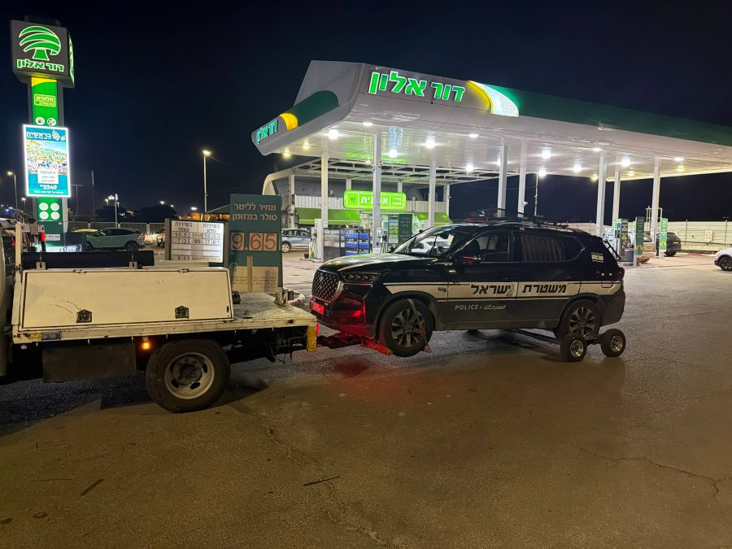
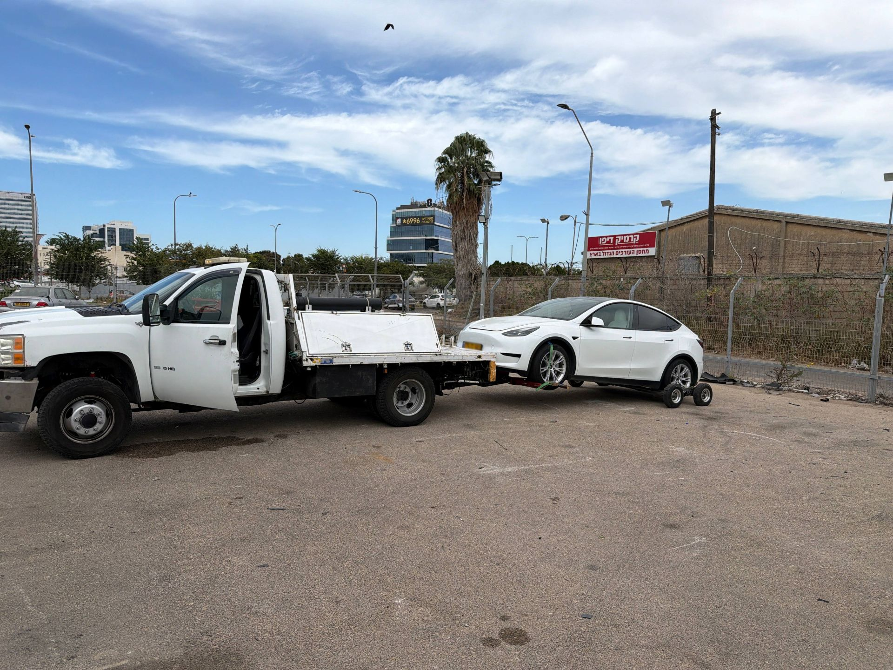

רכב עם הנעה כפולה (AWD או 4x4) מתנהג אחרת מרכב רגיל גם כשהוא מושבת. כל ארבעת הגלגלים מחוברים למערכת ההנעה, ולכן גרירה "רגילה", שבה מרימים רק את החזית ומשאירים את הגלגלים האחוריים על הכביש, עלולה לגרום לנזק יקר בתמסורת. במדריך הזה נסביר למה זה קורה, איך מזהים שהרכב שלכם הוא AWD, ואיך גוררים אותו בלי להסתכן.
מה ההבדל בין AWD ל-4x4, ולמה זה משנה בגרירה
- AWD (הנעה כפולה קבועה או אוטומטית): נפוץ בקרוסאוברים וברכבי משפחה. המערכת מעבירה כוח לשני הסרנים, בדרך כלל דרך דיפרנציאל מרכזי או מצמד אלקטרוני, גם כשהנהג לא עושה שום דבר.
- 4x4 (הנעה כפולה עם תיבת העברה): נפוץ בג'יפים ובטנדרים. ברוב הדגמים יש תיבת העברה (Transfer Case) שמחברת או מנתקת את הסרן הקדמי, ולעיתים גם מצב "N" שמאפשר גרירה בתנאים מסוימים.
- רכב חשמלי עם שני מנועים: כל סרן מקבל מנוע משלו. גם כאן הגלגלים מחוברים ישירות למנועים, ולכן חלים עליו כללי הגרירה של רכב חשמלי.
המשותף לכולם: אי אפשר להניח שהגלגלים "חופשיים". ההחלטה איך לגרור צריכה להתבסס על סוג ההנעה, ולא רק על גודל הרכב.
מה קורה כשגוררים רכב AWD עם שני גלגלים על הכביש
כשמרימים רק סרן אחד, הגלגלים שעל הכביש מסתובבים והגלגלים שבאוויר עומדים במקום. מערכת ההנעה הכפולה מנסה "ליישר" את ההפרש הזה, ממש כמו שהיא עושה כשגלגל אחד מחליק. בנסיעה קצרה זה עלול לחמם את המערכת, ובנסיעה ארוכה יותר הנזק יכול להצטבר:
- שחיקה והתחממות של הדיפרנציאל המרכזי או של המצמד שמחלק את הכוח בין הסרנים.
- נזק לתיבת ההעברה ברכבי 4x4.
- ברכבים אוטומטיים, סיבוב של חלקים בתיבת ההילוכים בזמן שהמשאבה שמשמנת אותם לא עובדת.
- ברכבים חשמליים והיברידיים, המנוע מסתובב ומייצר חשמל בלי שהמערכת מוכנה לכך.
הבעיה היא שהנזק לא תמיד מורגש מיד. לפעמים הוא מתגלה רק אחרי כמה שבועות, כרעש, רעידה או נורת אזהרה, וקשה לקשר אותו לגרירה.
הכלל הפשוט: רכב AWD או 4x4 גוררים כשכל ארבעת הגלגלים באוויר, או על משטח. אם אתם לא בטוחים איזה סוג הנעה יש לרכב, התייחסו אליו כאל AWD עד שתבדקו.
איך יודעים אם הרכב שלכם הוא AWD
- סמל על תא המטען: כיתובים כמו AWD, 4WD, 4x4, או שמות מסחריים של מערכות הנעה כפולה של היצרן.
- רישיון הרכב וספר הרכב: ברוב המקרים מצוין שם סוג ההנעה, ובספר הרכב יש בדרך כלל פרק על גרירה.
- מתג או בורר מצבי נהיגה: בורר 2H/4H/4L, כפתור נעילת דיפרנציאל או מצבי שטח הם סימן ברור.
- רכב חשמלי "Dual Motor": גרסאות עם שני מנועים הן בפועל רכבי הנעה כפולה.
- לא בטוחים? מספר רכב ודגם מספיקים לנו כדי לבדוק ולהגיד לכם מה שיטת הגרירה המתאימה.
איך גרר דולי גורר רכב AWD ו-4x4
בגרר דולי מרימים את הסרן הקדמי בעזרת מתקן ההרמה של הגרר, ומניחים את הגלגלים האחוריים על עגלות דולי. כך כל ארבעת הגלגלים מורמים מהכביש, ואף חלק במערכת ההנעה לא מסתובב בזמן הנסיעה. התהליך נראה כך:
- מזהים את סוג ההנעה ומוודאים שהרכב במצב חניה ובלם היד במצב הנכון לפי הוראות היצרן.
- מרימים את הסרן הקדמי וקושרים את הגלגלים לגרר.
- מכניסים עגלות דולי מתחת לגלגלים האחוריים ומרימים אותם מהקרקע.
- מאבטחים את הגלגלים בעגלות ובודקים את החיבורים לפני היציאה.
- נוסעים בזהירות ליעד: מוסך, מרכז שירות של היבואן או הבית.

היתרון של גרר דולי הוא שהוא קומפקטי ונכנס גם למקומות שגרר משטח מתקשה להגיע אליהם, כמו רחובות צרים, חניות צמודות וחניונים תת-קרקעיים, בלי לוותר על גרירה עם כל הגלגלים באוויר.
טעויות נפוצות בגרירת רכב 4x4
- "זה רק לכמה מאות מטרים": גם מרחק קצר עם שני גלגלים על הכביש עלול לגרום נזק, במיוחד ברכבים אוטומטיים.
- להעביר ל-N ולגרור על הגלגלים: במצב N של תיבת ההילוכים מערכת ההנעה הכפולה עדיין מחוברת. רק בחלק מרכבי השטח יש מצב ניוטרל מיוחד בתיבת ההעברה, וגם אז צריך לפעול בדיוק לפי ספר הרכב.
- לגרור בחבל עם רכב אחר: מלבד הסיכון בכביש, זו בדיוק גרירה עם כל הגלגלים על הקרקע.
- להניח שזה רכב "רגיל": הרבה קרוסאוברים נמכרים בגרסת הנעה קדמית ובגרסת AWD באותו מראה. אם לא בדקתם, אל תניחו.
גרירת רכב AWD במרכז הארץ
אנחנו גוררים רכבי AWD, 4x4 ורכבים חשמליים עם שני מנועים בנס ציונה, ראשון לציון, רחובות, באר יעקב, לוד ורמלה, וגם בגוש דן, השרון, ירושלים והשפלה. רוב הקריאות שלנו הן רכבים משפחתיים שנתקעו בחניה, ברחוב או בחניון, שצריכים להגיע למוסך או למרכז שירות בלי שאף גלגל יסתובב בדרך.
שאלות נפוצות
אפשר לגרור רכב AWD על גרר רגיל שמרים רק את החזית?
לא מומלץ. ברוב רכבי ה-AWD היצרן מורה לגרור עם כל ארבעת הגלגלים מורמים, על משטח או עם עגלות דולי תחת הסרן השני. גרירה עם סרן אחד על הכביש עלולה לפגוע בדיפרנציאל, במצמד ההנעה או בתיבת ההילוכים.
גרר דולי בטוח לרכב 4x4 כמו משטח?
כשכל ארבעת הגלגלים מורמים ומאובטחים, מבחינת מערכת ההנעה התוצאה זהה: אף גלגל לא מסתובב. ההבדל הוא שגרר דולי קומפקטי יותר, ולכן מתאים גם לחניונים ולרחובות צפופים.
מה לעשות אם אני לא יודע אם הרכב שלי AWD?
בדקו את הסמל על הרכב, את רישיון הרכב או את ספר הרכב. אם עדיין לא ברור, התקשרו ותנו לנו את הדגם והשנה, ונבדוק יחד. עד שיש תשובה, עדיף להתייחס לרכב כאל AWD.
גם רכב היברידי עם הנעה כפולה צריך גרירה מיוחדת?
כן. בהרבה רכבים היברידיים עם הנעה כפולה יש מנוע חשמלי שמחובר לסרן האחורי, ולכן הוא מסתובב כשהגלגלים מסתובבים. גם כאן הדרך הבטוחה היא גרירה עם כל הגלגלים באוויר.